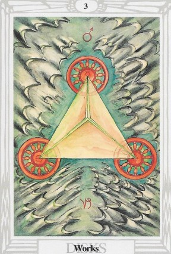

El Tarot Osho Zen te invita a reflexionar sobre tus emociones y aprendizajes internos. ✨
La carta de Pena nos enseña que el sufrimiento, aunque doloroso, puede ser una oportunidad para el crecimiento interior. Nos recuerda que es necesario sentir plenamente nuestras emociones para poder liberarlas y seguir adelante.
No evites tus emociones difÃciles. Aceptar el dolor es el primer paso hacia la sanación emocional. PermÃtete vivirlo sin juicio.
La tristeza puede traerte claridad sobre lo que realmente valoras en tu vida. Es un momento para conectar con tu esencia más profunda.
De las experiencias dolorosas pueden surgir nuevas comprensiones y transformaciones. Abre tu corazón a la posibilidad de un renacer emocional.
Puede ser un momento para sanar heridas del pasado. Hablar desde el corazón y permitirte sentir puede fortalecer tu conexión con los demás.
Es posible que te sientas desmotivado. Tómate un momento para reflexionar sobre tus metas y cómo puedes alinear tus esfuerzos con tu propósito.
Evita decisiones impulsivas basadas en emociones. La calma te ayudará a tomar mejores decisiones financieras.
Prioriza tu bienestar emocional. Prácticas como la meditación o la escritura pueden ayudarte a procesar tus sentimientos.
"Abrazo mis emociones con amor.
Permito que el dolor me enseñe lo que necesito aprender.
Hoy me abro a la sanación y al crecimiento."